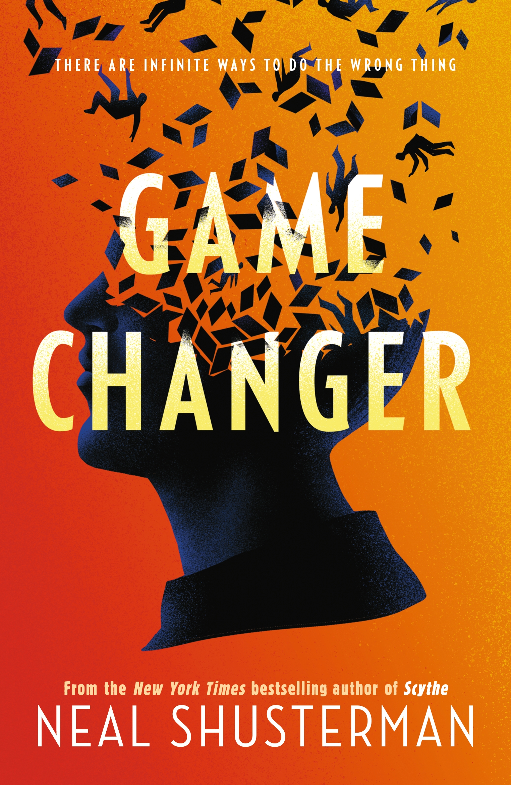

Dillon Barnes' entry to 10 for 10
Game Changer, by Neal Shusterman, is a book about a boy called Ash who plays football in his American school. This is the story of Ash and his experience travelling through different universes that are each similar but not like his own. For example, in one of them stop signs are blue, but in the next, segregation still exists in America.
This is an awesome book, and is my favourite of the 10 books. I really like it because it's fun whilst also highlighting some of the important issues in society like racism, abuse, sexism and lots more. It does this in a unique way of travelling through different universes and has interesting and quirky characters that you can relate to.
Game Changer is a speculative fiction book that brings light to key flaws in society. If you want to learn more, check out websites about topics such as these: